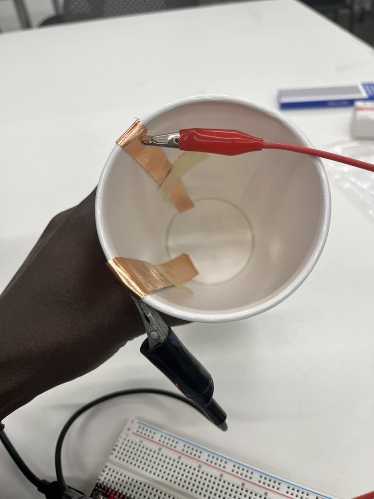
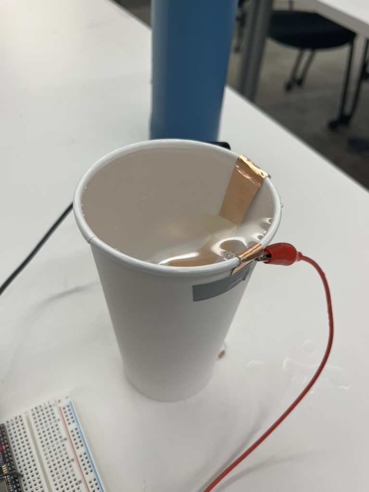
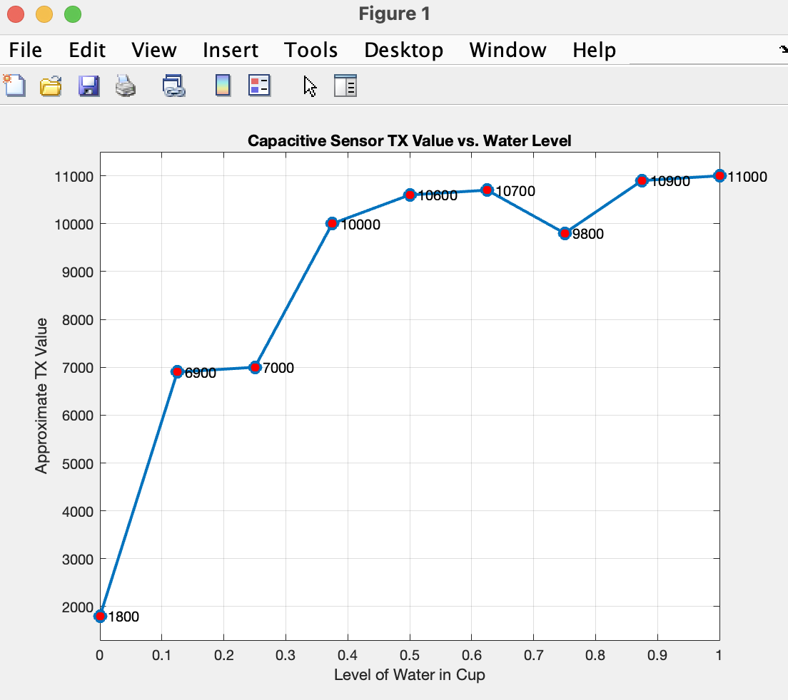
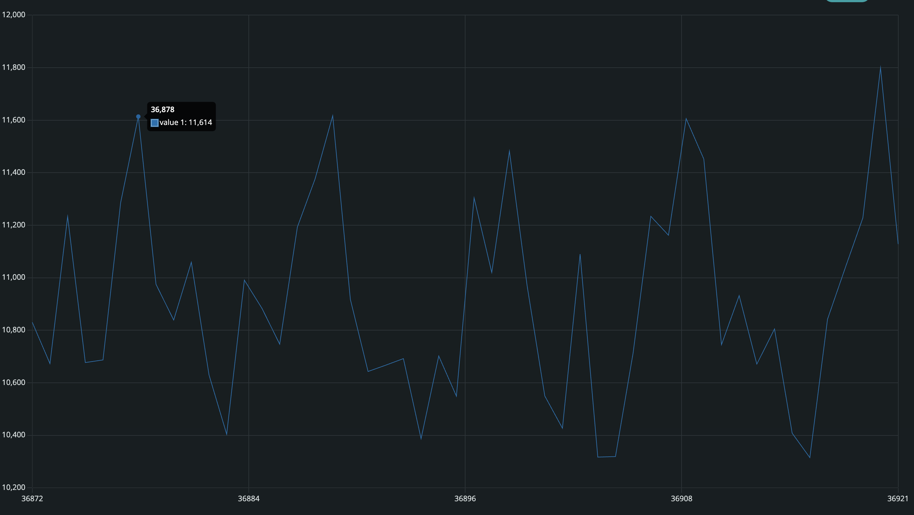

<div class="textcontainer">
<p class="margin"> </p>
<h3>Week 6: Electronic Inputs</h3>
<h4 class="title">Assignment 1: Capactive Sensor<h4>
<p>
For this assignment I made a water level sensor. I used two copper rods close to
each other, taped to a plastic container and connected to arduino. When the water. Air and water have different dielectric
constants, so the capacitance of the sensor changes when the water level changes. <br>
I did not code anything from scratch, I simply used the code on the course website (see below) and
read values for different water levels in the serial monitor. <br>
</p>
<P>
Initially, I had the two electrodes connected directly to the arduino, but quickly run into an
erroer. The Tx value without water was about 31,000 but it jumped to 491,500
when I added water to the 0.125 level and stayed there till the cup was full. This
was not the expected behavior. I had to use a 3M ohm resistor to stabilize the values. I divided the cup into 8 fairly
equal parts with smallest being 0 and biggest 1 and made the plot below in matlab. <br>
<br>I do not have a model for this data but it does not seem to follow any pattern. It could be the sensors
were very inaccurate, or maybe taking more
data points could have generated a better plot. <br>
</P>
<p>
Images of the setup:
<div style="display: flex; justify-content: center; gap: 20px; max-width: 100%;">
<div style="text-align: center; max-width: 250px;">

<p style="margin-top: 8px; font-size: 14px; color: #c9c9c9;">Empty Cup</p>
</div>
<div style="text-align: center; max-width: 250px;">

<p style="margin-top: 8px; font-size: 14px; color: #c9c9c9;">Full Cup</p>
</div>
</div>
</p>
<p>
Arduino code:
<pre><code>
long result; //variable for the result of the tx_rx measurement.
int analog_pin = 32;
int tx_pin = 4;
void setup() {
pinMode(tx_pin, OUTPUT); //Pin 4 provides the voltage step
Serial.begin(9600);
}
void loop() {
result = tx_rx();
Serial.println(result);
}
long tx_rx(){ // Function to execute rx_tx algorithm and return a value
// that depends on coupling of two electrodes.
// Value returned is a long integer.
int read_high;
int read_low;
int diff;
long int sum;
int N_samples = 100; // Number of samples to take. Larger number slows it down, but reduces scatter.
sum = 0;
for (int i = 0; i < N_samples; i++){
digitalWrite(tx_pin,HIGH); // Step the voltage high on conductor 1.
read_high = analogRead(analog_pin); // Measure response of conductor 2.
delayMicroseconds(100); // Delay to reach steady state.
digitalWrite(tx_pin,LOW); // Step the voltage to zero on conductor 1.
read_low = analogRead(analog_pin); // Measure response of conductor 2.
diff = read_high - read_low; // desired answer is the difference between high and low.
sum += diff; // Sums up N_samples of these measurements.
}
return sum;
} // End of tx_rx function.
</code></pre>
</p>
<br>
<p>
Matlab Code:
<pre><code>
% Data
water_level = [0, 1/8, 1/4, 3/8, 1/2, 5/8, 3/4, 7/8, 1]; % Water level in fractions
tx_value = [1800, 6900, 7000, 10000, 10600, 10700, 9800, 10900, 11000]; % TX readings
% Plot
figure;
plot(water_level, tx_value, '-o', 'LineWidth', 2, 'MarkerSize', 8, 'MarkerFaceColor', 'r');
% Labels and Title
xlabel('Level of Water in Cup');
ylabel('Approximate TX Value');
title('Capacitive Sensor TX Value vs. Water Level');
grid on;
% Set axis limits
xlim([0 1]);
ylim([min(tx_value)-500, max(tx_value)+500]);
% Show data points
for i = 1:length(water_level)
text(water_level(i), tx_value(i), sprintf(' %d', tx_value(i)), 'FontSize', 10);
end
</code></pre>
</p>
<p>
Plot diagram:

</p>
<p>
Snapshot of the serial plotter when the cup was full:

</p>
<h4 class="title">Assignment 2: Use + Calibrate Another Sensor</h4>
</div>